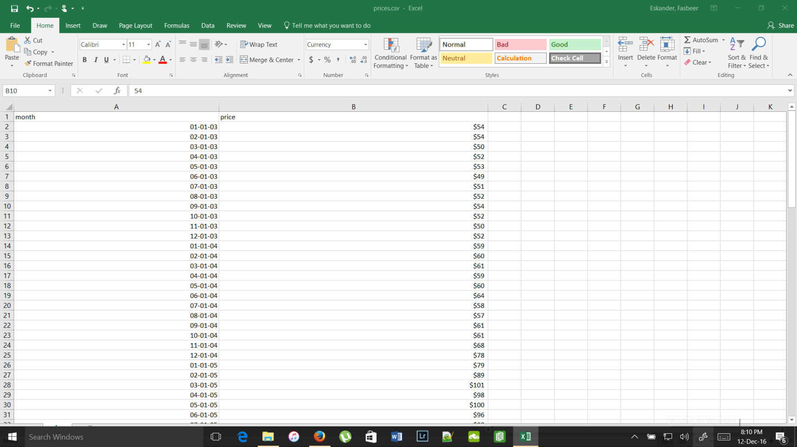
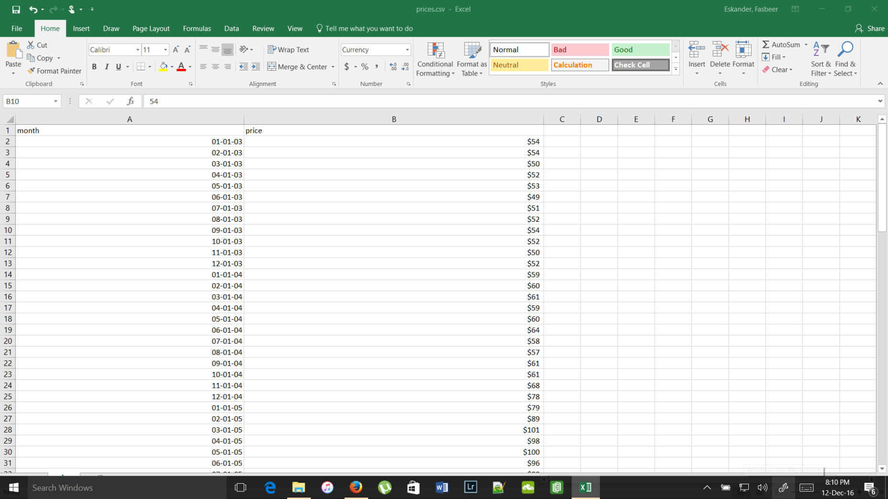
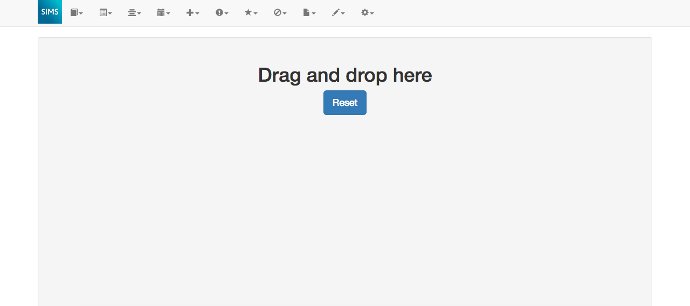
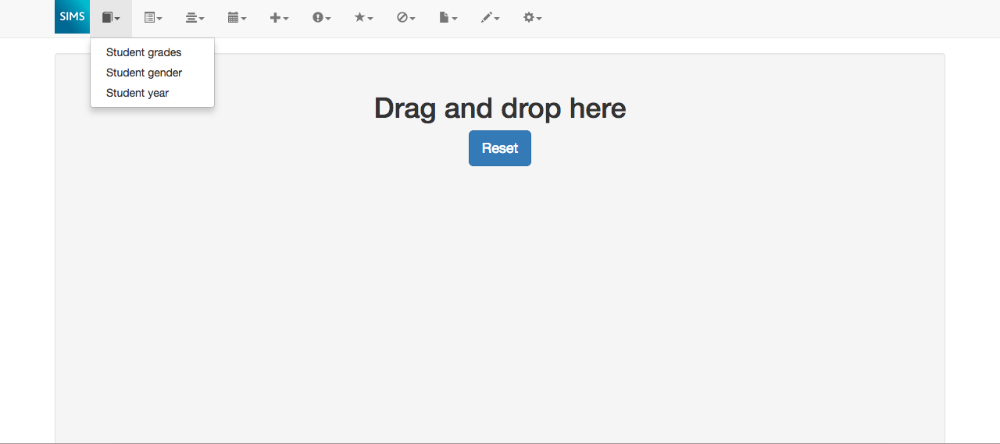
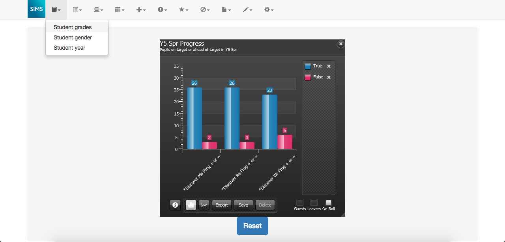
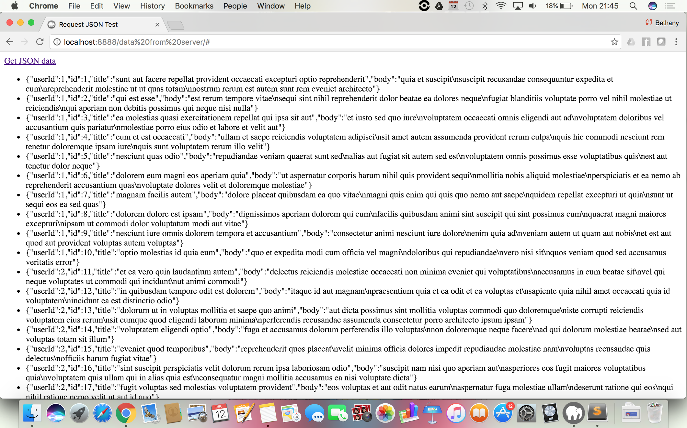

Data Visualisation
Technologies used: JavaScript and D3.js
This part of the prototype obtained dummy from a CSV file to generate a line graph.
The data was processed and a line chart was generated using the D3.js library for data visualisation.

How will our application work?
Our prototype is composed of a a series of different experiments, to experiment with what technologies we wanted to use in our final application. We used a combination of languages and libraries, such as HTML, CSS, JavaScript, Bootstraph and D3.js.
When we will build the application in Term 2, we will connect the different parts of the prototype and also use the data provided by Team 2, who are responsible of the data mining part of our project.
This part of the prototype obtained dummy from a CSV file to generate a line graph.
The data was processed and a line chart was generated using the D3.js library for data visualisation.

This part of our prototype consisted of creating the toolbar for our web application. modelled after the toolbar in the desktop version of SIMS Discovery.
The toolbar was built using Bootstrap
When a button in a toolbar is clicked, a drop down list of options appears. If the button is a button for data from SIMS, it can be drag and dropped onto the canvas.
When an option is dragged onto the canvas, an image of a graph appears. When we develop the application in Term 2, instead of an image it will be a graph generated using the data visualisation creating using D3 with the data obtained using Team 2's data mining algorithm.
For this part of the prototype, JSON data from a placeholder server was used to simulate connecting to Team 2’s server, which will be where we will get our data from when we build the app in Term 2
